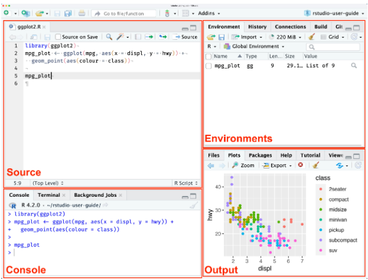

1 Introducción al manejo de R
1.1 Primeros pasos
- La instalación del lenguaje R puede realizarse desde la Red Integral de Archivos de R (CRAN). En esta interface se debe seleccionar el sistema operativo que corresponda, por ejemplo WINDOWS. En la siguiente interface, seleccionar base (o bien “install R for the first time”) y, finalmente, en la siguiente pantalla, seleccionar Download R-4.4.2 for Windows (o la versión que se desee). Se descargará un archivo ejecutable con el instalador del lenguaje, el cual deberemos correr aceptando todas las instancias.
- RStudio es un entorno de desarrollo integrado (IDE, por sus siglas en inglés) para el lenguaje de programación R, que ofrece una interfaz gráfica de usuario (GUI) amigable y diversas herramientas para facilitar el desarrollo, depuración y visualización de código. Entre sus características se incluyen la edición de código con resaltado de sintaxis, la ejecución de código línea por línea o por bloques, la gestión de paquetes, la creación de gráficos y la integración con otros programas y herramientas para el análisis de datos.

- RStudioCloud: Actualmente administrada por la compañía Posit, permite trabajar con Rstudio en la nube. Es necesario crear un cuenta (“Sign up”) cuando se accede por primera vez, o bien ingresar los datos de acceso (“log in”) en caso de que ya se posea una cuenta. La versión gratuita permite actualmente trabajar hasta con 50 proyectos y 25 horas de trabajo mensuales.
Enlaces
CRAN(“click”). Descarga del lenguaje R.
Rstudio(“click”). Descarga del IDE RStudio.
R 4.1 es la última versión compatible con versiones de 32 bits. Windows Vista ya no es compatible.
R 4.2.0 y versiones posteriores requieren Universal C Runtime (UCRT), que se incluye en Windows 10 y Windows Server 2016 o posterior. En versiones anteriores de Windows, UCRT debe instalarse antes de instalar R. UCRT está disponible para Windows desde Windows Vista SP2 y Windows Server 2008 SP2.
Antes de instalar RStudio, tienes que haber instalado R.
1.1.1 Otros IDE
¡¡¡ R PUEDE SER EJECUTADO SIN NECESIDAD DE UN IDE!!!
Por ejemplo, en la barra de búsqueda de Windows, seleccionar Editar las variables de entorno de esta cuenta. Aparecerá la ventana Variables de entorno. En el bloque Variables de usuario para usuario, seleccionar Path y luego presionar Editar…. Aparecerá la ventana Editar las variables de entorno. Presionar la opción Nuevo e ingresar C:\Program Files\R\R-4.4.2\bin (o la versión que se desee). Finalmente, Aceptar.
Desde ahora podremos correr código R desde la ventana de comandos Símbolo del sistema, a la cual se accede ingresando el comando CMD en la barra de búsqueda de Windows. Basta ejecutar el comando r para comenzar a correr código de R, y q() para salir.
1.2 Objetos
“Todo en R es un objeto”
Se conoce como objeto a toda entidad creada y manipulada en R. Datos, tablas, gráficos, funciones, vectores, matrices, son algunos tipos de objetos en R.
Los objetos en R se caracterizan porque pueden presentar distintos atributos, por ejemplo, un nombre. Esto quiere decir que al momento de almacenar un objeto es posible asignarle un nombre.
Al momento de nombrar un objeto en R, es importante utilizar nombres claros y cortos que permitan manipular con sencillez el objeto. También se sugiere utilizar nombres que permitan recordar fácilmente el contenido de los objetos.
Los nombres pueden incluir letras, números (siempre y cuando estén precedidos por una letra), guión bajo y puntos (antes o después de las letras). No se pueden utilizar símbolos especiales (“*”, “:”, “-”, “~”,“$”, entre otros) ni palabras reservadas (NA, for, while, TRUE, FALSE, Inf, NaN, NULL) en la denominación de un objeto.
R distingue mayúsculas y minúsculas, por lo que las variables a y A serán consideradas como objetos diferentes.
Podemos almacenar los datos en variables por medio del operador “=” o bien por medio de los operadores de asignación “<-” o “->”. También podemos asignar valores utilizando la función assign().
La función class() nos devuelve el atributo tipo de dato.
a = 1
a
class(a)
a <- 1
a
class(a)
1 -> a
a
class(a)
assign("a", 1)
a
class(a)Notar que las asignaciones se realizaron de derecha a izquierda en los dos primeros casos, y de izquierda a derecha en el tercero. La práctica más extendida es realizar la asignación de derecha a izquierda.
Ejemplos de atributos
Class
Dim: dimensión (matrices, dataframes, arreglos)
Names: nombre de los componentes de un objeto
Length: longitud de un vector.
Ncol, Nrow: número de columnas/filas (en matrices, dataframes, etc.)
Frecuency: frecuencia en una serie de tiempo
Etc.
En R, los tipos de datos principales se pueden agrupar en tipos atómicos, que son las unidades mínimas de información, y las estructuras de datos. Los principales tipos de datos atómicos son:
numeric: son datos numéricos. Un caso especial de datos numéricos es el tipo integer (entero).
character: son datos de tipo texto
logical: son datos lógicos, que pueden adoptar uno de dos valores: TRUE o FALSE.
complex: Números complejos, por ejemplo a = 2 + 3i.
También puede mencionarse el tipo de dato raw, usado para almacenar secuencias de bytes útiles para trabajar con datos binarios, pero su empleo se realiza en contextos muy específicos, por lo que usualmente no trabajaremos con ellos.
Además, según la estructura de los datos, los objetos pueden ser:
Vectores: son series de objetos del mismo tipo atómico.
Matrices: son arreglos en filas y columnas de objetos del mismo tipo atómico.
Arreglos (“arrays”): extienden las matrices a más dimensiones.
Tablas(data.frames o tibbles): son arreglos en filas y columnas de objetos que pueden pertenecer a diferentes tipos atómicos.
Listas: son series de objetos que pueden presentar diferentes estructuras.
Factores: son series de objetos indexados o que presentan un ordenamiento jerárquico. Para indicar el índice de un objeto, se emplea [[]] en lugar de [].
1.2.0.1 Ejemplos de clases de datos
x = 5
class(x)
mode(x)
x = 5L
class(x)
z = seq(0, 10, 2) # Secuencia: 'desde', 'hasta', 'cada'
class(z)
z = as.integer(z)
class(z)
sexo = c("masculino", "femenino")
class(sexo)
notas = c("1", "2", "3", "4", "5", "6", "7", "8", "9", "10")
class(notas)
mean(notas)
notas = as.numeric(notas)
class(notas)
mean(notas)
condicion = (z > x)
condicion
class(condicion)
complejo = 2 + 3i
complejo
class(complejo)
calificacion = factor(levels = c("insuficiente","regular","sobresaliente"))
calificacion
class(calificacion)
factor.sexo = as.factor(sexo)
factor.sexo
class(factor.sexo)
matrizNotas = matrix(notas, nrow = 5, ncol = 2)
matrizNotas
class(matrizNotas)
serie = seq(12)
serie
miArreglo = array(serie, dim = c(2,2,2)) # Las dimensiones hacen referencia al número de filas, número de columnas y número de capas, en ese orden
miArreglo
miLista = list(sexo, notas, calificacion)
miLista
miLista1 = miLista[[1]]
miLista1
class(miLista1)
tabla = data.frame(
Alumno = c("Juan", "Ana", "María"), # Columna 1
Notas = c(5, 8, 10) # Columna 2
)
tablaEn R, toda línea precedida por el símbolo # (numeral) no es ejecutada. Su empleo es muy útil para realizar comentarios o descripciones dentro del código.
Los tipos de estructuras más utilizados en el análisis de datos estadísticos son los vectores, matrices, tablas y factores.
Podemos ver que es posible modificar la tipología de un dato por otra, de ser necesario. Algunas funciones utilizadas son:
as.numeric(); as.integer()
as.character()
as.factor()
as.logical()
as.data.frame()
as.array()
1.2.0.2 Borrado de objetos
Para borrar objetos almacenados, se utiliza la función rm().
# Borrado de un objeto
rm(a)
a
# Error: objeto 'a' no encontrado
# Borrado de todos los objetos en el entorno
rm(list = ls())Antes de comenzar cualquier análisis estadístico, se sugiere borrar todos los objetos que pudieran estar almacenados en el entorno.
1.3 Funciones
Todo lo que ocurre en R es el resultado de una función
Una función en R es un bloque de código que realiza una tarea específica. Se la invoca por medio de un nombre seguido de paréntesis que pueden contener argumentos si son necesarios. Por ejemplo:
a = 30
b = 20
sort(c(a, b))
sum(a, b) # equivalente a 'a + b'R tiene muchas funciones integradas para realizar diversas operaciones, como cálculos matemáticos, manipulación de datos, gráficos, etc. Ejemplos incluyen sum(), mean(), length(), plot(), sort(), entre otros. Aún así, es posible crear funciones propias, lo cual se trabajará más adelante en la cursada.
1.3.1 Paquetes
En R, todas las funciones y sets de datos están almacenados en paquetes. Sólo cuando se cargue un paquete su contenido estará disponible. Ésto se realiza por una cuestión de eficiencia en el uso de los recursos computacionales, y también por seguridad.
Algunos paquetes o librerías forman parte del código fuente de R, y son conocidos como librerías de base, disponibles con la instalación de R. El resto de las librerías deben ser instaladas desde el CRAN, mediante el comando install.packages(“nombre del paquete”). En este último caso, para poder utilizar las funciones de estas librerías, se debe correr el comando library(“nombre del paquete”).
También es posible instalar paquetes desde un archivo previamente descargado desde el CRAN. Para ello se puede correr el comando:
install.packages(file.choose(), repos = NULL, type=“source”)
Por ejemplo, para importar archivos de datos con distintas extensiones, se puede utilizar la función import() de la librería {rio}.
install.packages("rio") # instalación de la librería (solo una vez)
library("rio") # invocación de la librería (cada vez que deseemos utilizar alguna de sus funciones)
import(file.choose()) # función import para leer archivos de datos y file.choose() para seleccionar archivos almacenadosAlgunas de las librerías más utilizadas en R están “empaquetadas” en la librería Tidyverse.
1.3.2 Concatenación de funciones: el operador “|>” (pipe)
Con frecuencia es necesario “anidar” funciones en R, por ejemplo:
numeros = seq(20)
numeros
round(sqrt(mean(numeros)), digits = 2)En la función anterior, la función mean() está anidada dentro de la función sqrt(), que a su vez está anidada dentro de la función round(). En estos casos, se dificulta llevar un control de las operaciones realizadas, por lo que se suele recurrir al operador |> (“pipe”), que permite concatenar funciones:
numeros = seq(20)
numeros |> mean() |> sqrt() |> round(digits = 2)o bien:
numeros |>
mean() |>
sqrt() |>
round(digits = 2)1.4 Estructuras de datos
1.4.1 El vector
En R, un vector es una serie o conjunto de elementos del mismo tipo. Un vector puede definirse por medio del operador c(), y ser asignado a una variable por medio del operador = ó <-. Por ejemplo:
decimales = c(1,2,3.5,7.8,9); decimales; class(decimales)
enteros = c(1L, 2L, 3L, 7L, 9L); enteros; class(enteros)
# o bien
enteros = as.integer(decimales); enteros; class(enteros)
logicos = c(TRUE,FALSE,FALSE,TRUE); logicos; class(logicos)Notar el empleo de “;” para concatenar diferentes comandos
En R, los vectores constituyen las estructuras de menor nivel. Es decir, en R, no existen las magnitudes escalares, las cuales son consideradas como vectores de tamaño 1.
Cuando en un vector hay elementos de distinto tipo, R automáticamente “coerciona” elementos de un tipo y los asigna a otro tipo en el siguiente orden: character, numeric, integer.
caracteres = c(1,2,"a","b",3); caracteres; class(caracteres)
sort(caracteres) #ordenamiento de caracteres
numeros = c(1.5, 2.5, 3L, 5L, 7.5); sort(numeros);class(numeros)Operaciones aritméticas, relaciones e indexación
# Operaciones aritméticas
numeros = c(1:10)
sum(numeros)
mean(numeros)
a = 4
numeros + a
numeros - a
numeros * a
numeros / a
numeros %/% a
numeros %% a
numeros2 = c(11:20)
numeros + numeros2
b = c(3,4)
numeros + b # ojo!
a^2
a**2
# Relaciones (se aplica a condiciones)
1 < a
5 < a
b > a
b >= a
b == a
b != a
a %in% b
a %in% numeros
# Indexación
n2 = numeros[2]; n2
mean(numeros[2:10])
mean(numeros[2:length(numeros)])
mean(numeros[-1])
numeros[numeros >= 5]
mean(numeros[numeros < 8])1.4.2 Matrices
Una matriz es un arreglo bidimensional de datos del mismo tipo. De hecho, un vector puede ser visto como un caso especial de una matriz en la cual hay solo una fila (o solo una columna). En el caso de las matrices, es posible consultar el atributo dim():
serie = c(1:16); serie
matriz = matrix(serie,ncol = 4); matriz
matriz = matrix(serie,ncol = 4,byrow = TRUE); matriz
dim(matriz)
# indexación
matriz = matrix(serie,ncol = 4)
matriz[,2] # columna 2
matriz[2,] # fila 2
matriz[2,2] # columna 2 fila 2
# operaciones sobre filas y columnas
colSums(matriz)
colMeans(matriz)
rowSums(matriz)
rowMeans(matriz)
apply(matriz,1,sum) # suma marginal de filas
apply(matriz,2,sum) # suma marginal de columnas1.4.3 Uniones
Son funciones que permiten combinar objetos como vectores, matrices y tablas.
1.4.3.1 Unión “cbind” (unión de “columnas”)
matriz.union.col = cbind(decimales,enteros); matriz.union.col
class(matriz.union.col)
dim(matriz.union.col)1.4.3.2 Unión “rbind” (unión de “filas”)
matriz.union.fila = rbind(decimales,enteros); matriz.union.fila
class(matriz.union.fila)
dim(matriz.union.fila)1.4.4 Data frames
A diferencia de una matriz, un dataframe puede ser visto como una colección de vectores de distinto tipo. Por ejemplo:
letras = letters[1:10]
numeros = c(1:10)
df = cbind(letras,numeros)
df
class(df)Entonces:
letras = letters[1:10]
numeros = c(1:10)
df = data.frame(letras=letras,numeros=numeros)
df
class(df)Una dataframe puede ser visto como una unión de vectores:
colNumeros = df$numeros
colNumeros
summary(colNumeros)Notar el empleo del signo \(\$\), indicando que el vector “numeros” pertenece al objeto “df”.
Un objeto tibble es un data frame mejorado:
letras = letters[1:10]
numeros = c(1:10)
df = tibble(letras=letras,numeros=numeros)
df
class(df)1.4.5 Otras estructuras
Como se mencionó, además de los vectores, matrices y data frames, otros tipos de estructura de datos son los arreglos o “arrays” y las listas, pero difícilmente las utilicemos en durante la cursada.
1.5 Importación de datos
1.5.1 Archivos .xlsx
library(readxl)
datos = file.choose() |>
read_excel()
View(datos)
rm(datos)1.5.2 Archivos .csv
datos = read.csv(file.choose(), header = TRUE, dec = ",")
# O bien
datos = file.choose() |>
read.csv(header = TRUE,dec = ",")
View(datos)
rm(datos)1.5.3 Archivos en general (librería “{rio}”)
library(rio)
datos = file.choose() |>
import()
View(datos)
rm(datos)1.5.4 Desde el repositorio de R
R provee un extenso listado de sets de datos reales para entrenamiento, que puede consultarse por medio de la función data(). En caso de que se desee importar un set de datos en particular, se puede ejecutar la instrucción data(nombre del set de datos), o simplemente, el nombre del set de datos. En nuestro caso:
datos = PlantGrowthPara consultar mayores detalles acerca del set de datos, se puede ejecutar:
?PlantGrowth1.6 Exploración de datos
str(datos) # estructura
head(datos,10) # primeros 10 registros
tail(datos,10) # últimos 10 registros
summary(datos) # resumen1.7 Exportación de datos
Veremos únicamente cómo exportar un archivo en formato excel con el paquete {rio}:
install.packages("rio")
library(rio)
ruta = choose.dir() # selección destino (carpeta)
nombreArchivo = "crecimientoPlantas.xlsx"
pg |> # Exportación en formato .xlsx
export(
file = file.path(ruta, nombreArchivo)
)